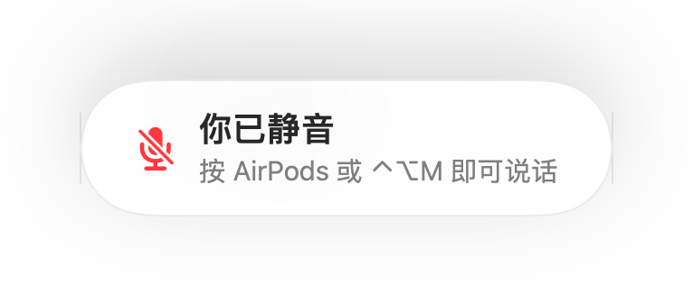

适用于各款通话 App 的“你已静音”提醒
Zoom 会在你处于静音状态说话时发出警告，但大多数其他 App 并不会提醒，网页端视频通话更是几乎从不提醒。你可能解释了一整分钟，才发现大家都在默默等你开麦。
Muffle 能在你静音时侦测语音，并在任何 App 中显示提醒。当通话使用 AirPods 或耳机时，它会通过 Mac 内建麦克风检测音量，绝不会录制任何内容。
开启提醒
- 1
安装 Muffle 并允许访问麦克风。
- 2
确保在“Muffle 设置”中开启“静音时说话提醒我”。
- 3
戴上 AirPods 或耳机加入通话并静音。
- 4
开始说话，屏幕上就会出现“你已静音”提醒。

- 上一场通话结束后还处于静音状态就加入了新通话？Muffle 会在通话开始时提醒你。
- 敲击键盘不会触发提醒，只有持续说话才会触发。
常见问题
提醒功能适用于 Mac 内建麦克风吗？
此功能适用于通话使用 AirPods 或耳机的情况。如果通话使用的是 Mac 内建麦克风，由于该麦克风已被静音，因此无法接收到声音。
会录制我的音频吗？
不会。Muffle 只会检测音量大小，绝不会保留或发送任何音频。